File: 000570.gt.txt (if the image is defective, simply delete all Arabic text and the line will be excluded)
أن يكون مذكورا بالعقب الصالح ، أن يكون قد نسي هذا الباب ، إن
File: 000571.gt.txt (if the image is defective, simply delete all Arabic text and the line will be excluded)
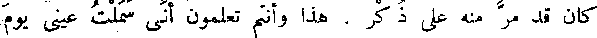
كان قد مر منه على ذكر . هذا وأنتم تعلمون أني سملت عيني يوم
File: 000572.gt.txt (if the image is defective, simply delete all Arabic text and the line will be excluded)
خصيت نفسي ، فقد نسيت كيفية الصور وكيف تروع ، وجهلت المراد
File: 000573.gt.txt (if the image is defective, simply delete all Arabic text and the line will be excluded)
منها ، وكيف تراد ، أفما كان(5) [ من كان كذلك ] حريا أن
File: 000574.gt.txt (if the image is defective, simply delete all Arabic text and the line will be excluded)
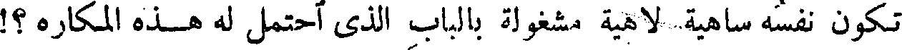
تكون نفسه ساهية لاهية مشغولة بالباب الذي أحتمل له هذه المكاره ؟!
File: 000575.gt.txt (if the image is defective, simply delete all Arabic text and the line will be excluded)
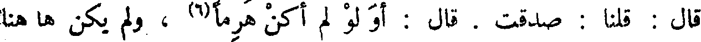
قال : قلنا: صدقت . قال : أو لو لم أكن هرما(6) ، ولم يكن ها هنا
File: 000576.gt.txt (if the image is defective, simply delete all Arabic text and the line will be excluded)
طول اجتناب ، وكانت الآلة قائمة أليس في(7) أني لم أذق حيوانا منذ ثمانين
File: 000577.gt.txt (if the image is defective, simply delete all Arabic text and the line will be excluded)

( حديث أبي المبارك الصابي )
File: 000578.gt.txt (if the image is defective, simply delete all Arabic text and the line will be excluded)
حدثني محمد بن عباد قال : سمعته يقول - وجرى ذكر النساء ومحلهن
File: 000579.gt.txt (if the image is defective, simply delete all Arabic text and the line will be excluded)
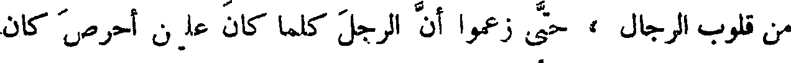
من قلوب الرجال ، حتى زعموا أن الرجل كلما كان عليهن أحرص كان
File: 000580.gt.txt (if the image is defective, simply delete all Arabic text and the line will be excluded)
ذلك أدل على تمام الفحولة فيه ، وكان أذهب له في الناحية التي هي
File: 000581.gt.txt (if the image is defective, simply delete all Arabic text and the line will be excluded)
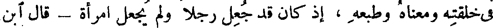
في خلقته ومعناه وطبعه ، إذ كان قد جعل رجلا ولم يجعل امرأة - قال آبن
File: 000582.gt.txt (if the image is defective, simply delete all Arabic text and the line will be excluded)
عباد ، فقال لنا : ألستم تعلمون أني قد أربيت على المائة ، فينبغي لمن
File: 000583.gt.txt (if the image is defective, simply delete all Arabic text and the line will be excluded)
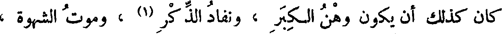
كان كذلك أن يكون وهن الكبر ، ونفاد الذكر (1) ، وموت الشهوة ،
File: 000584.gt.txt (if the image is defective, simply delete all Arabic text and the line will be excluded)
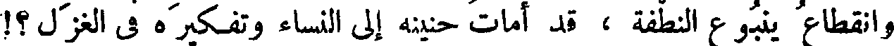
وانقطاع ينبوع النطفة ، قد أمات حنينه إلى النساء وتفكيره في الغزل ؟!
File: 000585.gt.txt (if the image is defective, simply delete all Arabic text and the line will be excluded)
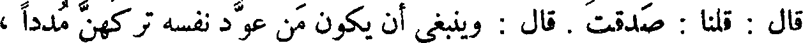
قال : قلنا : صدقت . قال : وينبغي أن يكون من عود نفسه تركهن مددا ،
File: 000586.gt.txt (if the image is defective, simply delete all Arabic text and the line will be excluded)
وتخلى عنهن سنين ودهرا(2) ، أن تكون العادة وتمرين الطبيعة ، وتوطين
File: 000587.gt.txt (if the image is defective, simply delete all Arabic text and the line will be excluded)
النفس ، قد حط من ثقل منازعة الشهوة ، ودواعي الباءة ، وقد علمتم أن
File: 000588.gt.txt (if the image is defective, simply delete all Arabic text and the line will be excluded)
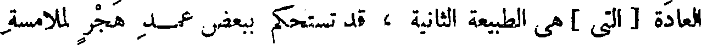
العادة [ التي ] هي الطبيعة الثانية ، قد تستحكم ببعض عمد هجر لملامسة
File: 000589.gt.txt (if the image is defective, simply delete all Arabic text and the line will be excluded)
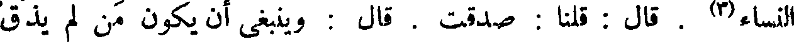
النساء(3) . قال : قلنا : صدقت . قال : وينبغي أن يكون من لم يذق
File: 000590.gt.txt (if the image is defective, simply delete all Arabic text and the line will be excluded)
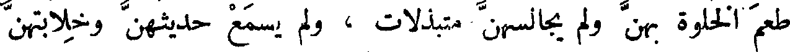
طعم الخلوة بهن ولم يجالسهن متبذلات ، ولم يسمع حديثهن وخلابتهن
File: 000591.gt.txt (if the image is defective, simply delete all Arabic text and the line will be excluded)
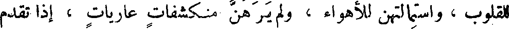
للقلوب ، واستمالتهن للأهواء ، ولم يرهن منكشفات عاريات ، إذا تقدم
File: 000592.gt.txt (if the image is defective, simply delete all Arabic text and the line will be excluded)
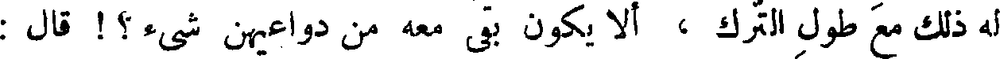
له ذلك مع طول الترك ، ألا يكون بقى معه من دواعيهن شيء ؟! قال :
File: 000593.gt.txt (if the image is defective, simply delete all Arabic text and the line will be excluded)
قلنا : صدقت . قال : وينبغي أن يكون لمن قد علم أنه مجبوب ، وأن
File: 000594.gt.txt (if the image is defective, simply delete all Arabic text and the line will be excluded)
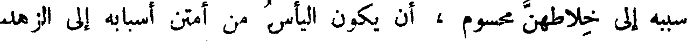
سببه إلى خلاطهن محسوم ، أن يكون اليأس من أمتن أسبابه إلى الزهد
File: 000595.gt.txt (if the image is defective, simply delete all Arabic text and the line will be excluded)
وإلى التقبض والتخدد(1) ، وإلى الهزال ، وسوء الحال ، فهذا الباب يعرض
File: 000596.gt.txt (if the image is defective, simply delete all Arabic text and the line will be excluded)
للخصيان ، ويعرض أيضا لمعالجي النبات من الأكرة(2) من أهل الزرع
File: 000597.gt.txt (if the image is defective, simply delete all Arabic text and the line will be excluded)

والنخل ، لأنك ترى الخصي وكأن السيوف تلمع في لونه(3) ، وكأنه مرآة
File: 000598.gt.txt (if the image is defective, simply delete all Arabic text and the line will be excluded)
صينية ، وكأنه وذيلة مجلوة ، وكأنه جمارة رطبة ، وكأنه قضيب فضة قد
File: 000599.gt.txt (if the image is defective, simply delete all Arabic text and the line will be excluded)
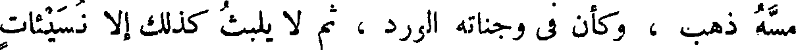
مسه ذهب ، وكأن في وجناته الورد ، ثم لا يلبث كذلك إلا نسيئات
To Save: `Ctrl+s`, make sure to choose `Webpage, complete`!